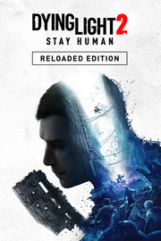

Dying Light 2 Stay Human
Dying Light 2 Stay Human
Detalles
|  | |
| Tiempo de juego | No Jugado |
| Última actividad | Nunca |
| Añadido | 11/6/2024 15:27:55 |
| Modificado | 11/6/2024 23:33:13 |
| Estado de finalización | No Jugado |
| Librería | Playnite |
| Fuente | 2TB DATOS |
| Plataforma | PC (Windows) |
| Fecha de lanzamiento | 2/3/2022 |
| Puntuación de la Comunidad | 78 |
| Puntuación de la Crítica | |
| Puntuación de usuario | |
| Género | Acción Aventura Rol |
| Desarrollador | Techland |
| Editor | Techland |
| Característica | Cloud Saves Compat. Total Con Mando Cooperativo Cooperativo En Línea Cromos De Logros De Multijugador Préstamo Familiar Remote Play En TV Un Jugador |
| Enlaces | Punto de encuentro Discusiones Guías Noticias Página de la tienda PCGamingWiki Logros |
| Tag | Acción Acción y aventura Aventura Combate Cooperativos Exploración Finales múltiples Las elecciones importan Multijugador Mundo abierto Parkour Posapocalípticos Primera persona Rol de acción Sangriento Supervivencia Terror Un jugador Violentos Zombis |
Descripción

Han pasado 20 años desde lo sucedido en el primer juego. El virus ha ganado la batalla y la humanidad agoniza. Ponte en el papel de Aiden Caldwell, un peregrino errante que se dedica a llevar suministros, noticias y sirve de nexo entre los pocos asentamientos de supervivientes que quedan en una tierra asolada por el virus zombi. Sin embargo, tus verdaderas intenciones son otras: encontrar a tu hermana Mia, a la que dejaste atrás siendo niño cuando escapaste del doctor Waltz y sus horribles experimentos. Presa de tu pasado, finalmente decides que es hora de enfrentarte a él cuando descubres que Mia puede seguir viva en la última ciudad de la Tierra: Villedor.
Al poco tiempo te das cuenta de que la ciudad es un asentamiento asediado por el conflicto. Tendrás que enfrentarte a tus enemigos en combates sangrientos e ingeniosos, así que perfecciona tus habilidades para poder derrotar a las hordas de zombis y hacer aliados por igual. Explora la ciudad con total libertad, haz parkour por los edificios y tejados de Villedor en busca de botines ocultos. ¡Ah! Y ten cuidado cuando caiga la noche, pues es entonces cuando los monstruos se apoderan de las calles.

Hace quince años, la humanidad fue devastada por la caída, un evento catastrófico que cambiaría el mundo para siempre. Con el virus Harran expandiéndose por todo el globo, la gente no tardó en darse cuenta de que no había esperanza en el mañana. Para el año 2036, solo quedaban unos cuantos asentamientos y la humanidad agonizaba, dando paso a una nueva especie: hordas y hordas de zombis implacables.

Te damos la bienvenida a Villedor, uno de los últimos bastiones de la humanidad. Durante el día, los supervivientes aún tratan de tener una vida y buscar una falsa sensación de normalidad. Se crean vínculos, se permite tener sueños y la vida sigue. De primeras, todo parece... correcto. Pero solo hasta que el sol se pone. Cuando muere el último rayo de sol, otro tipo de habitantes, más desagradables, salen de sus sucios escondrijos y toman las calles. Si no tienes cuidado y permaneces demasiado tiempo en la oscuridad, puede que jamás regreses.

No todas las batallas se pueden ganar. A veces lo mejor es echar a correr y, por suerte, tienes las habilidades para hacerlo. El parkour te permite escapar cuando la suerte no está de tu lado. Salta de tejado en tejado, balancéate entre edificios, usa tirolinas y muchas cosas más. Hagas lo que hagas, vivirás una sensación de libertad única recorriendo los edificios de Villedor buscando botín o mientras huyes de los peligros de la noche.

En un mundo tan peligroso como este, solo los más fuertes consiguen sobrevivir. Tanto si prefieres golpear, rajar o desmembrar a quien se cruce en tu camino, tendrás que ser creativo para lograr tu objetivo. ¿Y quién ha dicho que necesites armas? Utiliza todas tus habilidades de parkour para ir un paso por delante de tus enemigos. Aprende el arte del combate y el parkour para sentir el crujir de esos cráneos y esos cortes en la carne mientras manejas tus armas o te mueves para burlar cualquier tipo de daño. Y no olvidemos que Villedor tiene armas que harían que los arsenales de armas posapocalípticas parecieran de juguete.

Sobrevivir en Villedor es más fácil con amigos. Haz piña con hasta 3 jugadores más y aumentad vuestras probabilidades de sobrevivir. Descubrid la historia juntos, enfrentaos a los desafíos del Puesto de Peregrinos, o simplemente dedicaos a sembrar el caos en las calles.